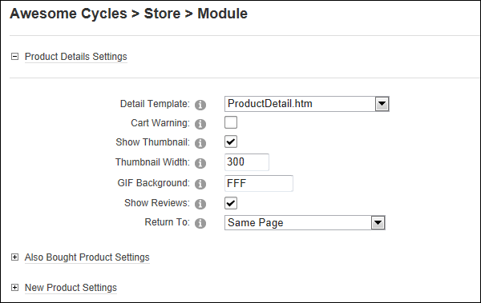

Managing Product Details Settings
How to manage the layout of product details in the Store Catalog module.
The "Show Product Detail" field must be checked in the General Settings section to configure these settings. See "Managing Store Catalog General Settings"
-
- Select the Catalog Settings tab.
- Maximize
 the Product Details Settings section and modify any of the following settings.
the Product Details Settings section and modify any of the following settings. - At Detail Template, select the template to be applied to the product details page. The templates included with the Store are called ProductDetail.htm and ProductDetailFullInfo.htm. The default setting is ProductDetail.htm.
- At Cart Warning, select from these options:
- At Show Thumbnail, select from these options:
- to display a thumbnail image.
- In the Thumbnail Width text box, enter the pixel width of each thumbnail image. The default setting is 300.
- In the GIF Background text box, enter a hexadecimal value to set the background color for GIF images. The default setting is white (FFF). Valid hexadecimal values are #FFFFFF, #f00, FF0000, F09, etc.
- to hide the thumbnail image.
- At Show Reviews, select from these options:
- to show reviews on the Product Details page.
- to hide reviews. If reviews are hidden then only Administrators can read review using the Store Admin module.
- At Return To, select the page where the user will be taken to when they click on the Return To Category link on the Product Details page. The default setting is Same Page.

-